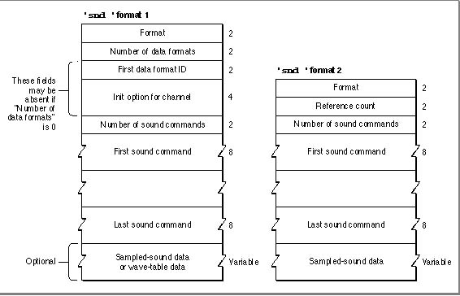
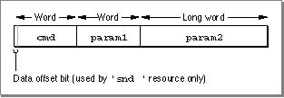

Important: Inside Macintosh: Sound is deprecated as of Mac OS X v10.5. For new audio development in Mac OS X, use Core Audio. See the Audio page in the ADC Reference Library.
Sound Resources
A sound resource is a resource of type'snd 'that contains sound commands and possibly also sound data. Sound resources are widely used by Macintosh applications that produce sounds. These resources provide a simple and portable way for you to incorporate sounds into your application. For example, the sounds that a user can select in the Sound control panel as the system alert sound are stored in the System file as'snd 'resources.There are two types of
'snd 'resources, known as format 1 and format 2. Figure 2-4 illustrates the structures of both kinds of'snd 'resources.Figure 2-4 The structure of
'snd 'resources
Resource IDs for
- IMPORTANT
- The format 2
'snd 'resource is obsolete. Your application should create only format 1'snd 'resources. The format 2'snd 'resource was designed for use by HyperCard and can be used with sampled-sound data only.
'snd 'resources in the range 0 to 8191 are reserved for use by Apple Computer, Inc. The'snd 'resources numbered 1 through 4 are defined to be the standard system alert sounds, although more recent versions of system software have included more standard system alert sounds.When a sound command contained in an
'snd 'resource has associated sound data, the high bit of the command is set. This changes the meaning of theparam2field of the command from a pointer to a location in RAM to an offset value that specifies the offset in bytes from the resource's beginning to the location of the associated sound data (such as a sampled sound header). Figure 2-5 illustrates the location of this data offset bit.Figure 2-5 The location of the data offset bit

The offset bit is used only by sound commands that are stored in sound resources of type
'snd 'and that have associated sound data (that is, sampled-sound or wave-table data).You can use a constant to access that flag.
CONST dataOffsetFlag = $8000; {sound command data offset bit}If thedataOffsetFlagbit is not set,param2is interpreted instead as a pointer to the location in memory (outside the sound resource) where the data is located.The first few bytes of the resource contain
'snd 'header information and are a different size for each format. An audio data type specified in a format 1'snd 'requires 6 bytes. The number of data types multiplied by 6 is added to this offset. The number of commands multiplied by 8 bytes, the size of a sound command, is added to the offset.The Format 1 Sound Resource
Figure 2-4 shows the fields of a format 1'snd 'resource. A format 1'snd 'resource header contains information about the format of the resource (namely, 1), the data type, and the initialization options for that data type. A format 1'snd 'resource contains sound commands and might also contain the actual sound data for wave-table sounds or sampled sounds. Note that if a sound resource includes sampled-sound data, then part of the sound data section is devoted to a sound header that describes the sampled-sound data in the remainder of the sound data section.If an
'snd 'resource specifies a data type, it can supply an initialization option in the field immediately following the type. You specify the number of commands in the resource in the number of sound commands field. The sound commands follow, in the order in which they should be sent to the sound channel.The format 1
'snd 'resource might contain only a sequence of commands describing a sound. In this case, the number of data types should be 0, and there should be no data type specification or initialization option in the'snd 'resource. This allows the'snd 'resource to be used with any kind of sound data.Listing 2-36 shows the output of the MPW tool DeRez when applied to the
'snd 'resource with resource ID 1 contained in the System file.Listing 2-36 A format 1
'snd 'resource
data 'snd ' (1, "Simple Beep", purgeable) { /*the sound resource header*/ $"0001" /*format type*/ $"0001" /*number of data types*/ $"0001" /*square-wave data*/ $"00000000" /*initialization option*/ /*the sound commands*/ $"001B" /*number of sound commands (27)*/ $"002C" /*command 1--timbreCmd 090 000*/ $"005A00000000" $"002B" /*command 2--ampCmd 224 000*/ $"00E000000000" $"002A" /*command 3--freqCmd 000 069*/ $"000000000045" $"000A" /*command 4--waitCmd 040 000*/ $"002800000000" $"002B" /*command 5--ampCmd 200 000*/ $"00C800000000" /*commands 6 through 26 are omitted; they are */ /* alternating pairs of waitCmd and ampCmd commands */ /* where the first parameter of ampCmd has the */ /* values 192, 184, 176, 168, 160, 144, 128, 96, */ /* 64, and 32*/ $"002B" /*command 27--ampCmd 000 000*/ $"000000000000" };As you can see, the Simple Beep is actually a rather sophisticated sound, in which the loudness (or amplitude) of the beep gradually decreases from an initial value of 224 to 0.Notice that the sound shown in Listing 2-36 is defined using square-wave data and is completely determined by a sequence of specific commands. ("Play an A at loudness 224, wait 20 milliseconds, play it at loudness 200....") Often, an
'snd 'resource consists only of a single sound command (usually thebufferCmdcommand) together with data that describes a sampled sound to be played. Listing 2-37 shows an example like this.Listing 2-37 A format 1
'snd 'resource containing sampled-sound data
data 'snd ' (19068, "hello daddy", purgeable) { /*the sound resource header*/ $"0001" /*format type*/ $"0001" /*number of data types*/ $"0005" /*sampled-sound data*/ $"00000080" /*initialization option: initMono*/ /*the sound commands*/ $"0001" /*number of sound commands that follow (1)*/ $"8051" /*command 1--bufferCmd*/ $"0000" /*param1 = 0*/ $"00000014" /*param2 = offset to sound header (20 bytes)*/ /*the sampled sound header*/ $"00000000" /*pointer to data (it follows immediately)*/ $"00000BB8" /*number of bytes in sample (3000 bytes)*/ $"56EE8BA3" /*sampling rate of this sound (22 kHz)*/ $"000007D0" /*starting of the sample's loop point*/ $"00000898" /*ending of the sample's loop point*/ $"00" /*standard sample encoding*/ $"3C" /*baseFrequency at which sample was taken*/ /*the sampled-sound data*/ $"80 80 81 81 81 81 81 81 80 80 80 80 80 81 82 82" $"82 83 82 82 81 80 80 7F 7F 7F 7E 7D 7D 7D 7C 7C" $"7C 7C 7D 7D 7D 7D 7E 7F 80 80 81 81 82 82 83 83" $"83 83 82 81 81 80 80 81 81 81 81 81 82 81 81 80" $"80 80 81 81 81 83 83 83 82 81 81 80 7F 7E 7D 7D" $"7F 7F 7F 7F 7E 7F 7F 7F 7F 7F 7F 7F 7F 7F 7F 80" /*rest of data omitted in this example*/ };This'snd 'resource indicates that the sound is defined using sampled-sound data. The resource includes a call to a single sound command, thebufferCmdcommand. The offset bit of the command number is set to indicate that the sound data is contained in the resource itself. Following the command and its two parameters is the sampled sound header, the first part of which contains important information about the sample. The second parameter to thebufferCmdcommand indicates the offset from the beginning of the resource to the sampled sound header, in this case 20 bytes. After the sound commands, this resource includes a sampled sound header, which includes the sampled-sound data. The format of a sampled sound header is described in "Sound Header Records" on page 2-104.For compressed sound data, the sampled sound header is replaced by a compressed sampled sound header. Listing 2-38 illustrates the structure of an
'snd 'resource that contains compressed sound data.Listing 2-38 An
'snd 'resource containing compressed sound data
data 'snd ' (9004, "Raisa's Cry", purgeable) { /*the sound resource header*/ $"0001" /*format type*/ $"0001" /*number of data types*/ $"0005" /*first data type*/ $"00000380" /*initialization option: initMACE3 + initMono*/ /*the sound command*/ $"0001" /*number of sound commands that follow (1)*/ $"8051" /*cmd: bufferCmd*/ $"0000" /*param1: unused*/ $"00000014" /*param2: offset to sound header (20 bytes)*/ /*the compressed sampled sound header*/ $"00000000" /*pointer to data (it follows immediately)*/ $"00000001" /*number of channels in sample*/ $"56EE8BA3" /*sampling rate of this sound (22 kHz)*/ $"00000000" /*starting of the sample's loop point; not used*/ $"00000000" /*ending of the sample's loop point; not used*/ $"FE" /*compressed sample encoding*/ $"00" /*baseFrequency; not used*/ $"00006590" /*number of frames in sample (26,000)*/ $"400DADDD1745D145826B" /*AIFFSampleRate (22 kHz in extended type)*/ $"00000000" /*markerChunk; NIL for 'snd ' resource*/ $"4D414333" /*format; MACE 3:1 compression*/ $"00000000" /*futureUse2; NIL for 'snd ' resource*/ $"00000000" /*stateVars; NIL for 'snd ' resource*/ $"00000000" /*leftOverBlockPtr; not used here*/ $"FFFF" /*compressionID, -1 means use format field*/ $"0010" /*packetSize, packetSize for 3:1 is 16 bits*/ $"0000" /*snthID is 0*/ $"0008" /*sampleSize, sound was 8-bit before processing*/ $"2F 85 81 32 64 87 33 86" /*the compressed sound data*/ $"6F 48 6D 65 72 6B 82 88" $"91 FE 8D 8E 86 4E 7C E9" $"6F 6D 71 70 7E 79 4F 83" $"59 8F 8F 65" /*rest of data omitted in this example*/ };This resource has the same general structure as the'snd 'resource illustrated in Listing 2-36. The principal difference is that the standard sound header is replaced by the compressed sound header. This example resource specifies a monophonic sound compressed by using the 3:1 compression algorithm. A multichannel compressed sound's data would be interleaved on a packet basis. See "Compressed Sound Header Records" beginning on page 2-108 for a complete explanation of the compressed sound header.As you've seen, it is not always necessary to specify
'snd 'resources by listing the raw data stream contained in them; indeed, for certain types of format 1'snd 'resources, it can be easier to supply a resource specification like the one given in Listing 2-39.Listing 2-39 A resource specification
resource 'snd ' (9000, "Nathan's Beep", purgeable) { FormatOne { { /*array of data types: 1 element*/ /*[1]*/ squareWaveSynth, 0 } }, { /*array SoundCmnds: 3 elements*/ /*[1]*/ noData, timbreCmd {90}, /*[2]*/ noData, freqDurationCmd {480, $00000045}, /*[3]*/ noData, quietCmd {}, }, { /*array DataTables: 0 elements*/ }; };When you pass a handle to this resource to theSndPlayfunction, three commands are executed by the Sound Manager: atimbreCmdcommand, afreqDurationCmdcommand, and aquietCmdcommand. The sound specified in Listing 2-39 is just like the Simple Beep, except that there is no gradual reduction in the loudness. Listing 2-40 shows a resource specification for the Simple Beep.Listing 2-40 A resource specification for the Simple Beep
resource 'snd ' (9001, "Copy of Simple Beep", purgeable) { FormatOne { { /*array of data types: 1 element*/ /*[1]*/ squareWaveSynth, 0 } }, { /*array SoundCmnds: 27 elements*/ /*[1]*/ nodata, timbreCmd {90}, /*[2]*/ nodata, ampCmd {224}, /*[3]*/ nodata, freqCmd {69}, /*[4]*/ nodata, waitCmd {40}, /*[5]*/ nodata, ampCmd {200}, /*[6]*/ nodata, waitCmd {40}, /*[7]*/ nodata, ampCmd {192}, /*[8]*/ nodata, waitCmd {40}, /*[9]*/ nodata, ampCmd {184}, /*[10]*/ nodata, waitCmd {40}, /*[11]*/ nodata, ampCmd {176}, /*[12]*/ nodata, waitCmd {40}, /*[13]*/ nodata, ampCmd {168}, /*[14]*/ nodata, waitCmd {40}, /*[15]*/ nodata, ampCmd {160}, /*[16]*/ nodata, waitCmd {40}, /*[17]*/ nodata, ampCmd {144}, /*[18]*/ nodata, waitCmd {40}, /*[19]*/ nodata, ampCmd {128}, /*[20]*/ nodata, waitCmd {40}, /*[21]*/ nodata, ampCmd {96}, /*[22]*/ nodata, waitCmd {40}, /*[23]*/ nodata, ampCmd {64}, /*[24]*/ nodata, waitCmd {40}, /*[25]*/ nodata, ampCmd {32}, /*[26]*/ nodata, waitCmd {40}, /*[27]*/ nodata, ampCmd {0}, }, { /*array DataTables: 0 elements*/ } };The Format 2 Sound Resource
TheSndPlayfunction can also play format 2'snd 'resources, which are designed for use only with sampled sounds. TheSndPlayfunction supports this format by automatically opening a sound channel and using thebufferCmdcommand to send the data contained in the resource to the channel.Figure 2-4 illustrates the fields of a format 2
'snd 'resource. The reference count field is for your application's use and is not used by the Sound Manager. The number of sound commands field and the sound command fields are the same as described in a format 1 resource. The last field of this resource contains the sampled sound. The first command should be either asoundCmdcommand orbufferCmdcommand with the data offset bit set in the command to specify the location of this sampled sound header.Listing 2-41 shows a resource specification that illustrates the structure of a format 2
'snd 'resource.Listing 2-41 A format 2
'snd 'resource
data 'snd ' (9003, "Pig Squeal", purgeable) { /*the sound resource header*/ $"0002" /*format type*/ $"0000" /*reference count for application's use*/ /*the sound command*/ $"0001" /*number of sound commands that follow (1)*/ $"8051" /*command 1--bufferCmd*/ $"0000" /*param1 = 0*/ $"0000000E" /*param2 = offset to sound header (14 bytes)*/ /*the sampled sound header*/ $"00000000" /*pointer to data (it follows immediately)*/ $"00000BB8" /*number of bytes in sample (3000 bytes)*/ $"56EE8BA3" /*sampling rate of this sound (22 kHz)*/ $"000007D0" /*starting of the sample's loop point*/ $"00000898" /*ending of the sample's loop point*/ $"00" /*standard sample encoding*/ $"3C" /*baseFrequency at which sample was taken*/ $"80 80 81 82 84 87 93 84" /*the sampled-sound data*/ $"6F 68 6D 65 72 7B 82 88" $"91 8E 8D 8F 86 7E 7C 79" $"6F 6D 71 70 70 79 7F 81" $"89 8F 8D 8B" /*rest of data omitted in this example*/ };
- Note
- Remember that format 2
'snd 'resources are obsolete. You should create only format 1'snd 'resources.